Mirutex IDE — галерея интерфейса
Шесть экранов в двух темах. Нажмите на изображение, чтобы открыть оригинал.
Светлая тема · Код и граф
Редактор Java рядом с графом выполнения выбранного метода.
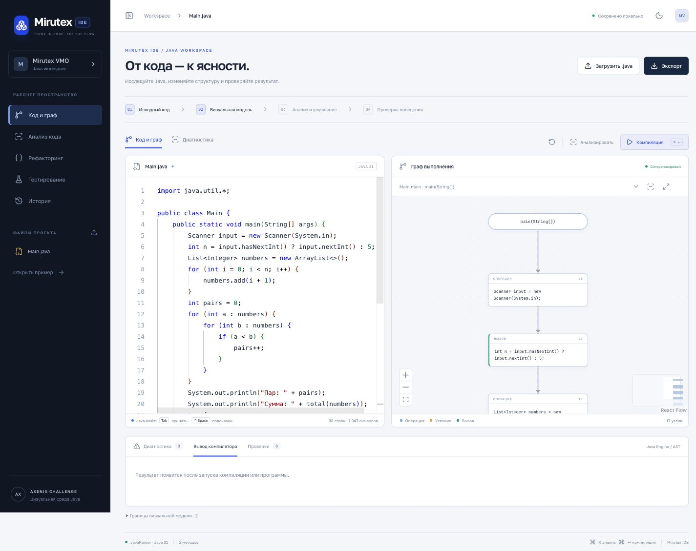
Светлая тема · Анализ кода
Диагностика, оценка сложности и переход к проблемному фрагменту.
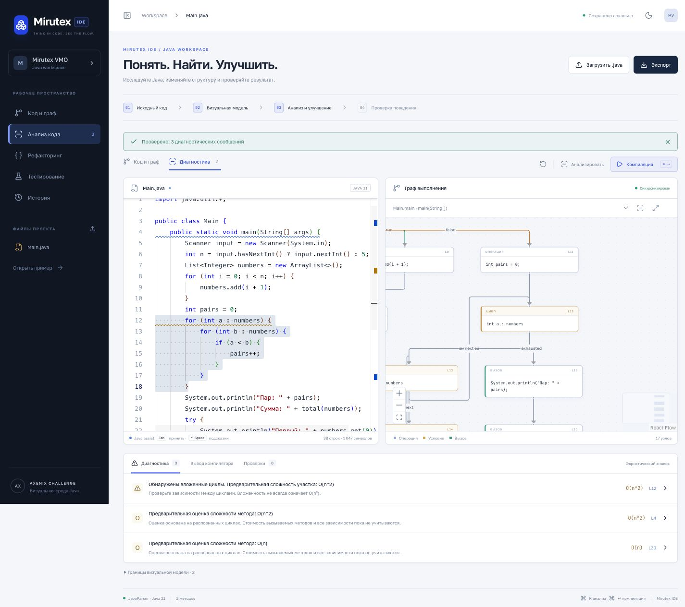
Светлая тема · Рефакторинг
Проверенный diff, новый компонент и три успешных сценария до применения.
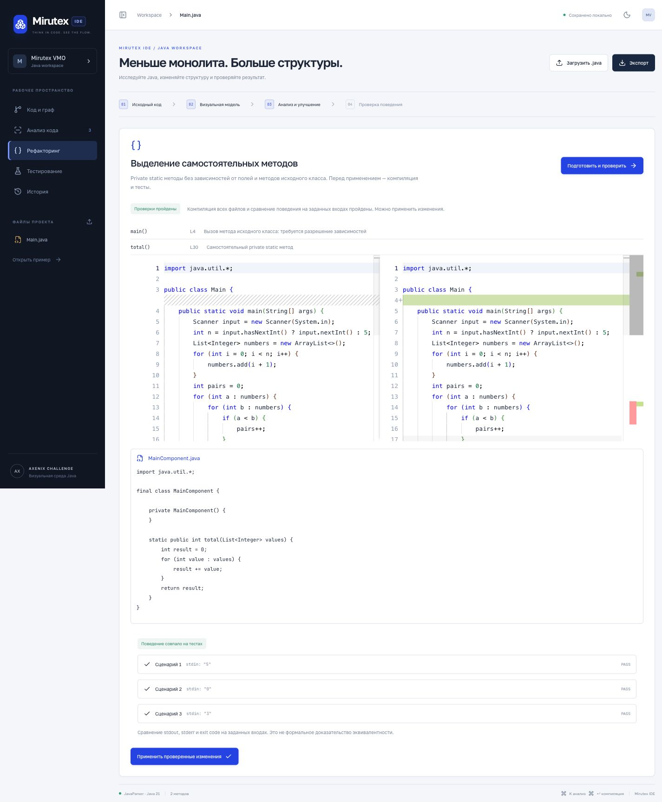
Светлая тема · Проверка поведения
Сравнение исходной и изменённой версий: stdout, stderr и exit code; три PASS.
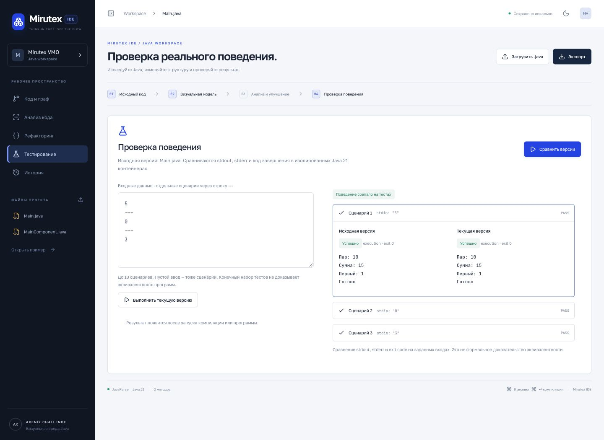
Светлая тема · История
Снимки проектов и восстановление состояния до преобразования.
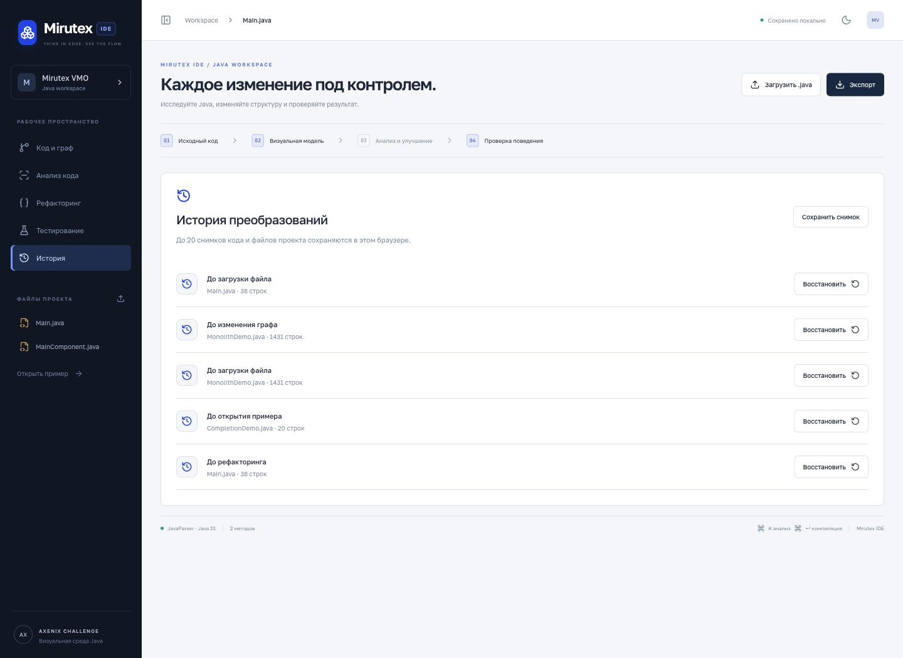
Светлая тема · Подсказки Java
Настоящее меню методов при вводе System.out.pr; Tab принимает выбранную подсказку.
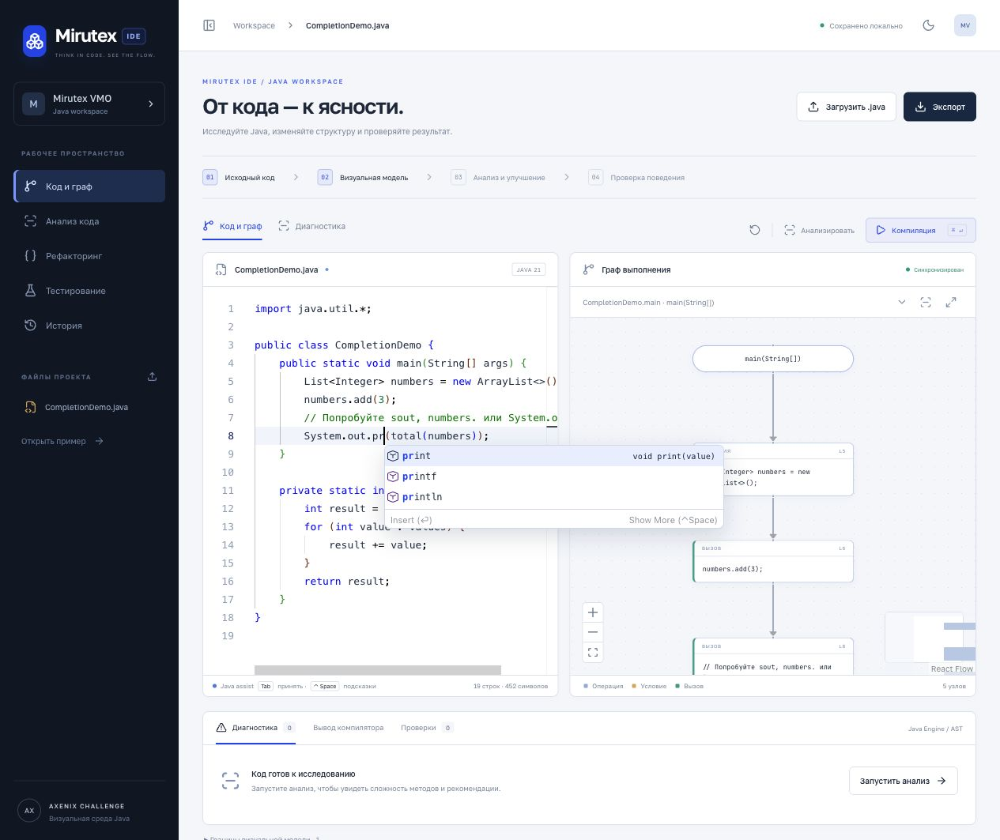
Тёмная тема · Код и граф
Редактор Java рядом с графом выполнения выбранного метода.
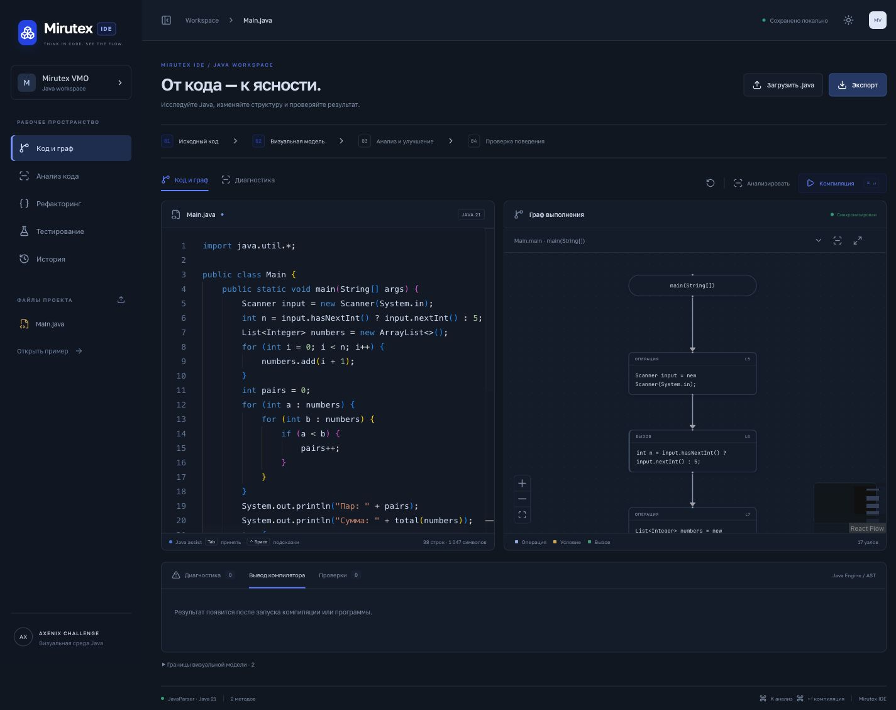
Тёмная тема · Анализ кода
Диагностика, оценка сложности и переход к проблемному фрагменту.
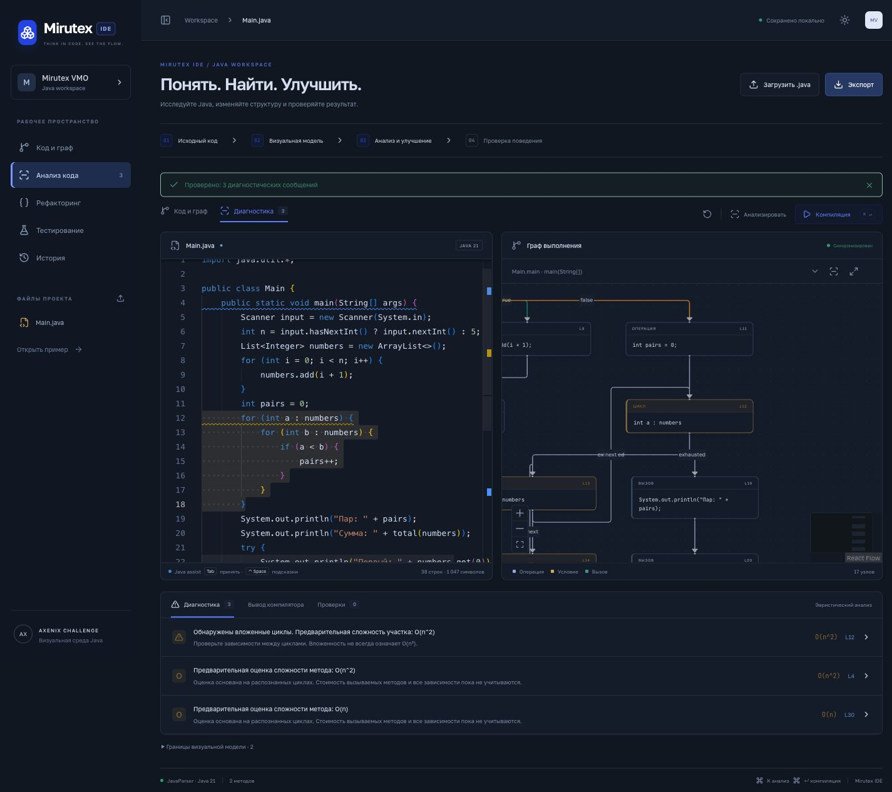
Тёмная тема · Рефакторинг
Проверенный diff, новый компонент и три успешных сценария до применения.
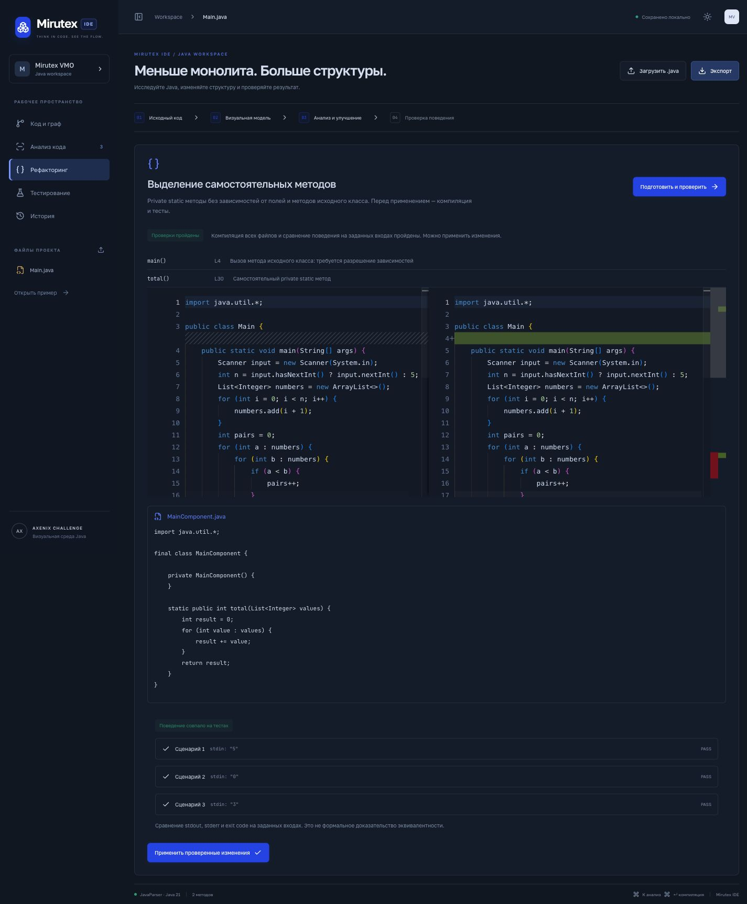
Тёмная тема · Проверка поведения
Сравнение исходной и изменённой версий: stdout, stderr и exit code; три PASS.
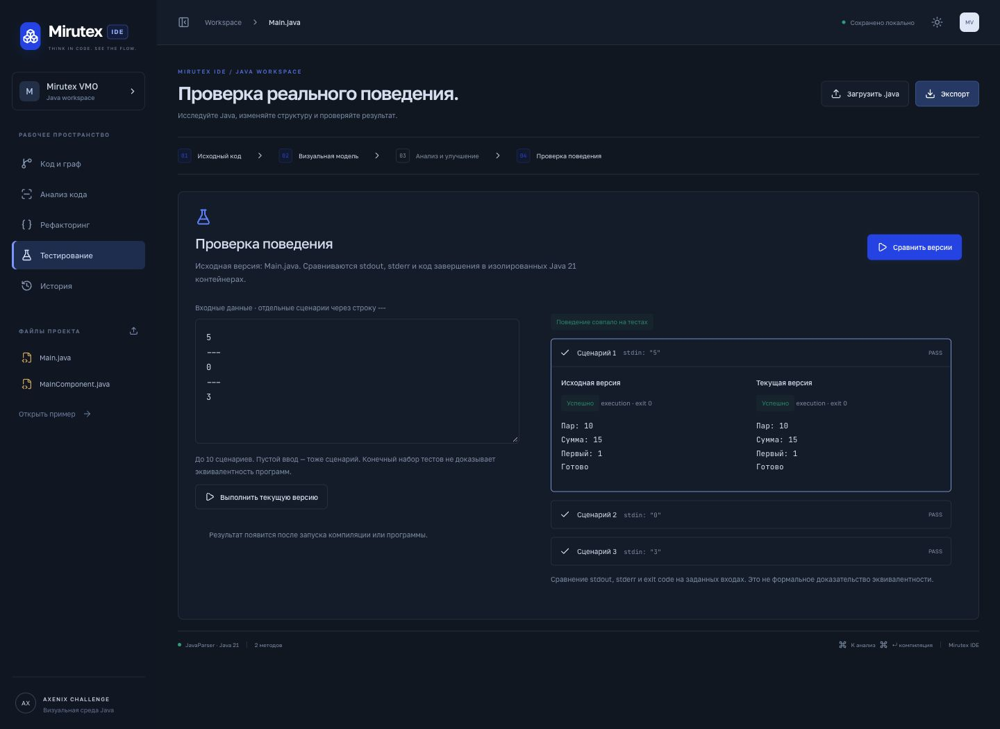
Тёмная тема · История
Снимки проектов и восстановление состояния до преобразования.
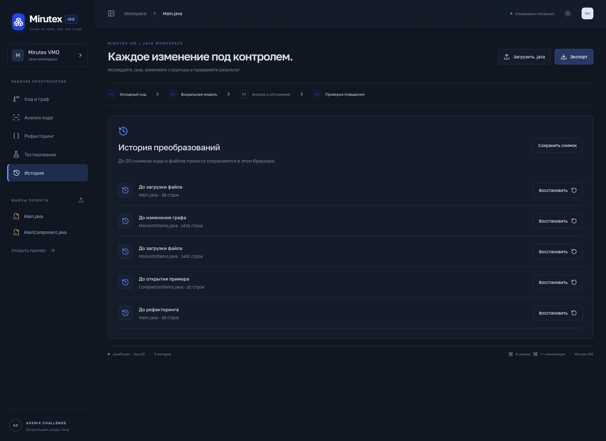
Тёмная тема · Подсказки Java
Настоящее меню методов при вводе System.out.pr; Tab принимает выбранную подсказку.
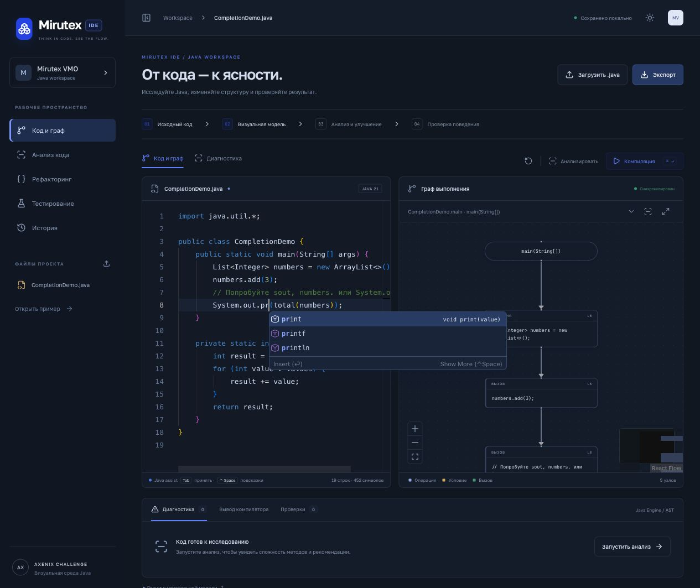